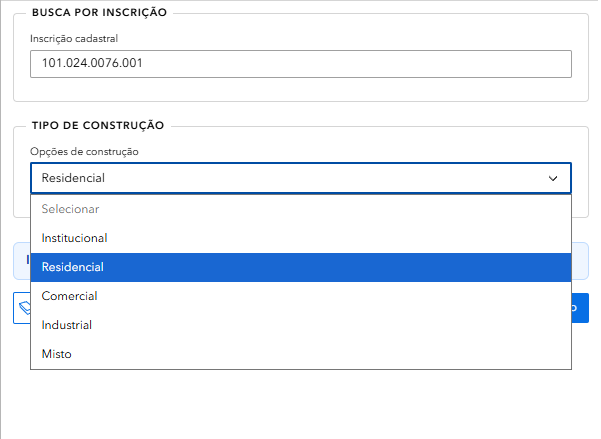
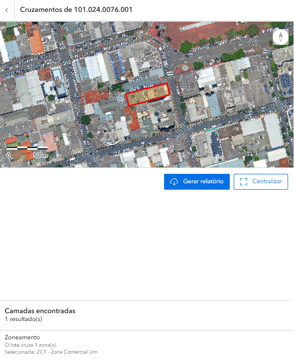
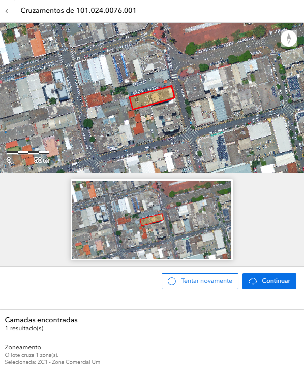
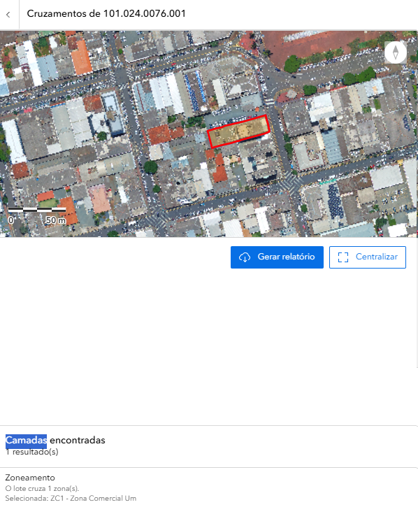

🎯 Introdução
Bem-vindo ao tutorial da aplicação Consulta de Viabilidade Urbanística! Esta ferramenta permite verificar as condições urbanísticas de um terreno no município de Apucarana, identificando o zoneamento, os parâmetros de uso e ocupação do solo, e gerando um relatório oficial de viabilidade.
O que você vai aprender:
- Como navegar na interface da aplicação
- Buscar um terreno por inscrição cadastral
- Selecionar o tipo de construção pretendida
- Interpretar o resultado da análise espacial
- Validar a geolocalização do imóvel
- Gerar e interpretar o relatório de viabilidade urbanística
🖥️ A Interface
1️⃣ O Mapa Interativo Central
A parte central da tela exibe o mapa do município de Apucarana com a malha cadastral dos lotes urbanos destacada.

Mapa interativo da Consulta de Viabilidade Urbanística
2️⃣ O Painel Lateral Direito
À direita, você encontra o painel de consulta com dois campos principais:
- Busca por Inscrição: campo para digitar a inscrição cadastral do terreno
- Tipo de Construção: dropdown para selecionar a finalidade do empreendimento
3️⃣ Controles do Mapa
À esquerda do mapa, você encontra os botões de controle:
- +/- Zoom in e zoom out
- 🏠 Voltar para a visão inicial
- ⬅️➡️ Navegar entre visualizações anteriores
- ⬆️ Bússola / orientação do mapa
- ℹ️ Informações
- 🗑️ Limpar seleção
4️⃣ Barra Superior
Na parte superior da tela você encontra:
- Logo GeoAPUC e título "Consulta de Viabilidade Urbanística"
- Barra de busca central: "Encontrar endereço ou lugar"
- Ícones no canto direito: camadas, lista, grid, régua, impressora e gráfico
🔍 Como Buscar
Digite a Inscrição Cadastral
No painel lateral direito, localize o campo "Inscrição cadastral" e digite o número do imóvel.

Campo de busca por inscrição cadastral
O formato da inscrição é:
101.024.0076.001
Selecione o Tipo de Construção
Logo abaixo do campo de inscrição, clique no dropdown "Opções de construção" e selecione a finalidade do empreendimento.

Dropdown com as opções de tipo de construção
| Tipo | Descrição |
|---|---|
| Institucional | Equipamentos públicos, igrejas, escolas, hospitais |
| Residencial | Habitações unifamiliares e multifamiliares |
| Comercial | Comércio e prestação de serviços |
| Industrial | Atividades produtivas e manufatureiras |
| Misto | Combinação de usos (ex: residencial + comercial) |
Clique em "Próximo"
Após preencher a inscrição e selecionar o tipo de construção, clique no botão "Próximo >" para iniciar a análise.
🏗️ Tipos de Construção
Cada tipo de construção está sujeito a regras específicas definidas pelo Plano Diretor Municipal e pelo Código de Obras e Edificações de Apucarana. Veja o que cada categoria contempla:
🏠 Residencial
Destinado à moradia. Inclui casas, sobrados, apartamentos e condomínios. As exigências variam conforme o zoneamento (recuos, taxa de ocupação, coeficiente de aproveitamento).
🏪 Comercial
Destinado ao comércio varejista e atacadista, e à prestação de serviços. Deve ser compatível com o zoneamento local.
🏭 Industrial
Destinado à produção manufatureira. Geralmente restrito a zonas industriais (ZI) e zonas especializadas de produção (ZEPC).
🏛️ Institucional
Destinado a equipamentos e serviços públicos ou comunitários: escolas, postos de saúde, igrejas, associações.
🔀 Misto
Combinação de dois ou mais usos no mesmo imóvel. Sujeito às regras de todos os usos combinados.
📍 Análise Espacial
Após clicar em "Próximo", o sistema realiza automaticamente uma análise espacial do terreno, cruzando a inscrição cadastral com as camadas de zoneamento municipal.

Resultado da análise espacial com zoneamento identificado
O que o sistema verifica:
- Localização exata do lote no mapa cadastral
- Zoneamento em que o lote está inserido
- Camadas encontradas e número de resultados
Interpretando o Resultado
No exemplo acima, para a inscrição 101.024.0076.001:
| Campo | Resultado |
|---|---|
| Camadas encontradas | 1 resultado(s) |
| Zoneamento | O lote cruza 1 zona(s) |
| Zona selecionada | ZC1 - Zona Comercial Um |
Os botões disponíveis nesta etapa são:
- 🔄 Gerar relatório — avança para a geração do documento oficial
- ⬜ Centralizar — centraliza o mapa no lote encontrado
🗺️ Geolocalização e Validação
O sistema apresenta uma etapa de validação da geolocalização, exibindo duas visões do lote para confirmação.

Tela de geolocalização com visualização do lote para validação
O que é exibido:
- Mapa principal com o lote destacado em vermelho (visão ampliada)
- Miniatura com visão aproximada do lote para confirmação
- Camadas encontradas confirmando o zoneamento:
ZC1 - Zona Comercial Um
Ações disponíveis:
| Botão | Ação |
|---|---|
| 🔄 Tentar novamente | Retorna à busca para corrigir a inscrição ou o tipo de construção |
| ▶️ Continuar | Confirma a geolocalização e avança para o relatório |
📄 Relatório de Viabilidade
Após confirmar a geolocalização, clique em "Gerar Relatório" para emitir o documento oficial de viabilidade urbanística.

Tela final com botão para geração do relatório de viabilidade
O relatório gerado contém:
- Identificação do imóvel (inscrição cadastral e endereço)
- Zoneamento em que o lote está inserido
- Tipo de construção consultado
- Parâmetros urbanísticos aplicáveis (recuos, taxa de ocupação, coeficiente de aproveitamento)
- Resultado da viabilidade — se o uso pretendido é permitido, tolerado ou proibido no zoneamento
💼 Casos Práticos
Caso 1: Verificar Viabilidade para Construção Residencial
Objetivo: Saber se é possível construir uma residência em determinado terreno.
Passos:
- Digite a inscrição cadastral no campo "Inscrição cadastral"
- Selecione "Residencial" no dropdown de tipo de construção
- Clique em "Próximo >"
- Verifique o zoneamento identificado na análise espacial
- Confirme a geolocalização e clique em "Continuar"
- Clique em "Gerar Relatório" para obter o documento
Caso 2: Verificar Viabilidade para Uso Comercial
Objetivo: Confirmar se um lote em zona comercial permite abertura de estabelecimento.
Passos:
- Digite a inscrição cadastral
- Selecione "Comercial" no dropdown
- Clique em "Próximo >"
- Verifique se o zoneamento (ex: ZC1) é compatível com uso comercial
- Confirme a geolocalização e gere o relatório
Caso 3: Terreno com Uso Misto
Objetivo: Verificar se é possível combinar moradia e comércio no mesmo lote.
Passos:
- Digite a inscrição cadastral
- Selecione "Misto" no dropdown
- Avance e verifique as restrições de cada uso no resultado
- Gere o relatório para obter os parâmetros urbanísticos detalhados
❓ FAQ - Perguntas Frequentes
Qual a diferença entre Viabilidade Urbanística e Viabilidade Econômica?
A Viabilidade Urbanística verifica as condições de uso e ocupação do solo (zoneamento, recuos, taxa de ocupação). A Viabilidade Econômica verifica quais atividades econômicas (CNAEs) são permitidas no local.
O que é ZC1 - Zona Comercial Um?
É uma zona destinada principalmente ao comércio e serviços de médio e grande porte. Consulte a Lei Complementar Municipal nº 08/20 para os parâmetros urbanísticos detalhados desta zona.
Posso construir qualquer tipo de edificação em qualquer zona?
Não. Cada zona tem restrições específicas de uso. Por exemplo, uma zona residencial (ZR) pode não permitir edificações industriais. O relatório de viabilidade indicará o que é permitido.
O que fazer se o lote cruzar mais de uma zona?
O sistema indicará todas as zonas encontradas. Neste caso, os parâmetros mais restritivos geralmente se aplicam. Consulte a Idepplan para orientação específica.
O relatório tem validade legal?
O relatório é um documento de consulta e referência. Para fins de aprovação de projetos e alvarás, é necessário protocolar junto à Secretaria de Obras ou Idepplan da Prefeitura de Apucarana.
Encontrei um erro nos dados. Como reportar?
Entre em contato com a Idepplan - Prefeitura de Apucarana através do email: sic@apucarana.pr.gov.br
A aplicação funciona em celular?
Sim! A aplicação é responsiva e funciona bem em smartphones e tablets. Acesse pelo navegador do seu dispositivo.
📚 Glossário
Abaixo estão os principais termos usados ao longo do tutorial, com definições rápidas para facilitar a consulta.
| Termo | Definição |
|---|---|
| CNAE | Classificação Nacional de Atividades Econômicas. Identifica o tipo de atividade econômica permitida ou declarada no local. |
| Zoneamento | Divisão do território urbano em zonas com regras específicas de uso e ocupação do solo. |
| Viabilidade | Avaliação que indica se o uso pretendido é permitido, tolerado ou proibido para um lote. |
| Lote | Parcela de terreno individualizada no cadastro municipal, normalmente associada a uma inscrição cadastral. |
| Inscrição Cadastral | Código identificador do imóvel no cadastro técnico da Prefeitura, usado para localizar o lote no sistema. |